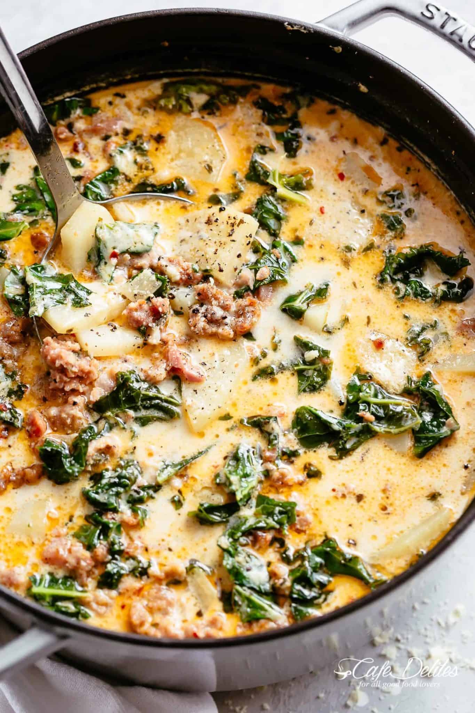

Zuppa Toscana

Description
Comfort food in a bowl.
From the mild (or hot) flavours
of Italian sausage, crispy flavourful
of bacon pieces, hearty chunks of
tender potatoes, a creamy splash of
cream, this is the soup to make on
a cold and miserable day/night when
you have unlimited garlic bread lying around.
While Zuppa Toscana translates to
“Tuscan soup,” this is not a traditional
soup from the region. Much like a Garlic
Butter Tuscan Shrimp, Salmon or Chicken,
this soup was made famous by Olive Garden
restaurant chains around the Unites states.
Ingredients
- 1 tbsp olive oil
- 1 lb mild Italian Sausage (casings removed)
- 4 oz (125 g) diced bacon
- 1 large onion, chopped
- 6 cloves garlic minced
- 1/2 cup dry white wine, optional
- 1 1/2 quarts (1.5 litres) low-sodium chicken broth
- 5 Russet potatoes scrubbed, rinsed and sliced into 1/4-inch slices*
- 1 cube beef bouillon crushed
- 1/2 tsp salt
- 1/4 tsp cracked black pepper
- 1 tsp ground fennel
- 1 tsp red chili flakes, optional - adjust to your taste
- 1 1/2 cups half and half or heavy/thickened cream
- 3 cups chopped kale, hard stems removed (substitute for baby spinach leaves or Swiss chard)
- Fresh shredded parmesan cheese for serving
- 1 tbsp cornstarch (optional --for a thicker soup) SEE NOTES
Steps
- Fry the sausage in a heavy based pot
or Dutch oven over medium-high heat
while breaking up the meat with the
end of your wooden spoon. When browned,
and cooked through (about 10 minutes),
drain most of the oil, leaving about 1
teaspoon of drippings in the pot. Transfer
sausage meat to a plate.
- Cook the bacon in the same pot/Dutch oven over
medium heat until crispy (about 10 minutes). Drain,
leaving about 2 teaspoons of drippings in the pot.
Transfer cooked bacon to the plate with the sausage meat.
- Sauté onions in the pot and cook until soft and translucent
(about 5 minutes). Add the garlic and cook for 1 minute,
until fragrant.
- OPTIONAL: Add the wine and let reduce to half (about 2 minutes).
- Increase heat to high, pour in the chicken broth and bring to a boil.
Season broth with crushed bouillon, salt, pepper, fennel and chili flakes.
Add the potatoes and boil until fork tender (about 10 minutes).
- Reduce heat to medium. Stir in the heavy cream, cooked sausage,
bacon and kale. Let simmer for 2 minutes, until kale leaves
have softened.
NOTES
*For low carb option, replace potatoes with 1 head of cauliflower,
chopped.
Cut potatoes into even pieces to ensure even cooking.
Chicken, turkey or beef sausages can be used.
Pancetta can be used instead of bacon.
For a thicker soup, mix cornstarch together with 2 tablespoons
of cream. Mix well until free from lumps and add it in along
with the cream. Give it a good stir while the soup is boiling
until thickened. Then add in the cooked sausage, bacon and kale.
Continue on with the recipe.